|
File MenuThe File menu provides commands that pertain to housekeeping tasks for documents. It also contains the Quit command. All of the standard operations are described here. If you add additional commands to the File menu, be sure that they fit the category of taking care of documents. Figure 4-61 shows a sample File menu.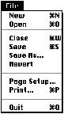 NewThe New command opens a new, untitled document for the current application. The user names the document the first time it's saved. If you detect that there isn't enough memory available to open another untitled window when the user chooses this command, display a dialog box that explains why the user can't open another window and suggest a solution.As described in Chapter 5, "Windows," which begins on page 131, always title the first new window "untitled." Some specialized applications require documents to be named when the user creates them. For example, if you are developing a database application, you can display the standard file dialog box for saving documents so that the user can name and save the database document upon creation. For more information on displaying default window titles, see Chapter 5. Figure 4-62 shows the New command and its result. 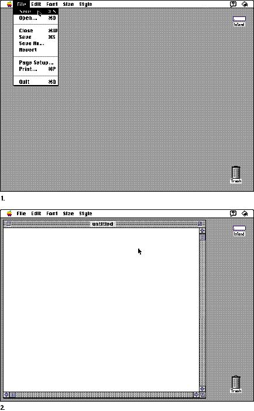 OpenThe Open command opens an existing document. When the user chooses Open from within your application, display the standard file dialog box. The user selects a document from the list in the dialog box. You can create a custom filter procedure to display all the documents of the types that your application can handle. When the user selects a document, the application opens it. Figure 4-63 shows the standard file dialog box that appears when the user chooses the Open command.Figure 4-63 The standard file dialog box for opening files 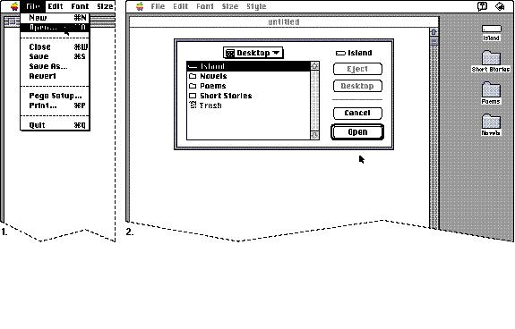 The user can browse through all levels of the file system from the desktop down through nested folders, and back to the desktop. The Eject button allows the user to eject any removable media such as a 3.5-inch disk or a CD-ROM disc. The Eject button is disabled when there are no removable media selected. The Desktop button allows the user to go immediately to the top level of the hierarchy. The Desktop button is disabled when the user is looking at that level, as shown in Figure 4-63. When the
user chooses Open while running an application, the
standard file dialog box displays all documents that the
application can open. The standard file dialog box displays
all documents, folders, and storage devices that are
available. When the user selects a document and clicks the
Open button When an application starts up by putting an empty,
untitled document on the screen, the Open command remains
enabled even if the application allows only one open
document at a time. In this case, choosing Open from
the Note that you shouldn't set a maximum number of documents that your application can open. You should base the limit on the amount of available memory at any given time. CloseThe Close command closes the active window, which may be a document window, a modeless dialog box, a folder, or any other type of window. Clicking in a window's close box provides a mouse-based method of closing windows. The user can also press Command-W to close windows.When the user chooses the Close command, and the active document has been changed since the last save, display the standard save changes alert box. This alert box is designed to prevent users from accidentally losing data. The standard appearance and layout of the alert box help users quickly identify a potentially dangerous situation. For information about the layout of items in alert boxes, see "Basic Dialog Box Layout," which begins on page 193 in Chapter 6, "Dialog Boxes." Use the caution alert box, which includes the caution icon in the upper-left corner. This icon indicates to users that they need to carefully consider the alert box message before clicking the default button or pressing the Return key. The caution icon should always be in the same, predictable location so that users easily recognize it as a warning and understand its meaning. The button names in the save changes alert box correlate to the action users perform by pressing the button. The buttons read Save, Don't Save, and Cancel. Using these verbs reinforces the identity of each possible action to the user. In other words, Don't Save provides much more context for the user than No does. In order to prevent accidental clicks of the wrong
button, you should Figure 4-64 The save changes alert box 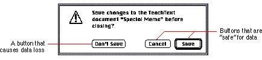 Include the name of your application and the name of the
document in When you display the save changes alert box, center it horizontally either on the screen or over the active window if the window is on a large screen. Figure 4-65 shows the correct placement of the alert box on three common sizes of screens. Figure 4-65 The correct location of the save changes alert box 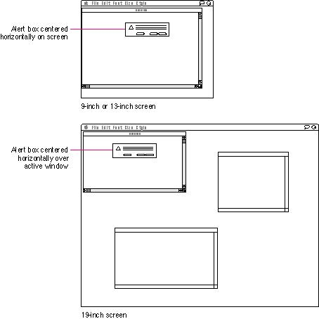 SaveThe Save command lets the user save the active document to a disk, including any changes made to that document since the last time it was saved.Figure 4-66 shows the Save command. 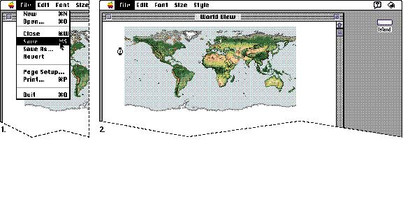 The document remains open. Provide feedback to the user that the document is being saved. Use the animated watch cursor if the save takes approximately one or two seconds. If the operation takes much longer, display a status bar or other message box. If the user chooses Save for a new untitled document (one that the user hasn't saved yet), display the Save As dialog box described in the next section. If there's not enough room on the selected disk to save the document, display a caution alert box that says so and suggest that the user can use Save As instead to save the document on another disk. Don't destroy the document just because the current disk is full. Figure 4-67 shows a sample alert box for this case. Figure 4-67 A sample alert box to use when a disk is full 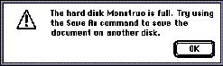 Save AsThe Save As command saves a copy of the active document under a new name provided by the user. Figure 4-68 shows the Save As command and its dialog box.Figure 4-68 The Save As command and dialog box 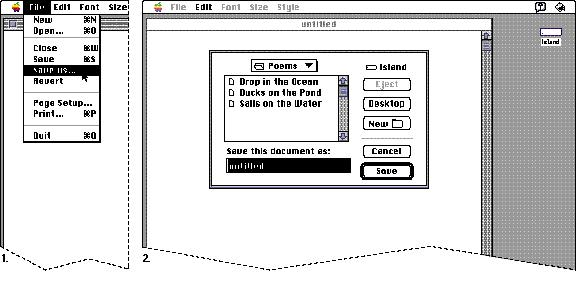 The Save As dialog box allows the user to provide a name for the document and to choose where it will be saved. Leave the document open and active. When the user opens a document, makes changes to it, and
then chooses If the user uses the Save As command to make a new copy of a document, and made no changes to the original document, create a second document exactly like the first one. The user now has two identical documents with different names. If your application supports stationery, include a
Stationery option in the Don't use the Save a Copy command in your application. People may not understand the distinction between the Save As command and the Save a Copy command. Revert |
|
|
The Revert
command discards all changes made to the active document
since the last time it was saved or opened. The document
that was last saved to the disk is reopened. When the user chooses Revert, display an alert box that warns the user about the potential data loss this operation will cause. Provide a cancel button so that the user has a way to back out of the situation. Figure 4-69 shows a File menu with the Revert command highlighted and an appropriate alert box. |
|
Figure 4-69 The Revert command
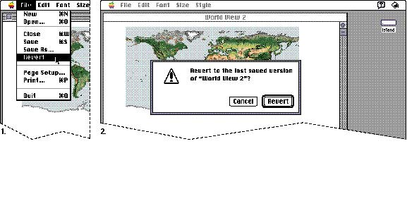 Page Setup...The Page Setup command lets the user specify printing parameters suchas the paper size and printing orientation. Your application can provide other printing options as appropriate. These parameters are saved with the document when the document is saved. Figure 4-70 shows a typical Page Setup dialog box. Figure 4-70 A Page Setup dialog box 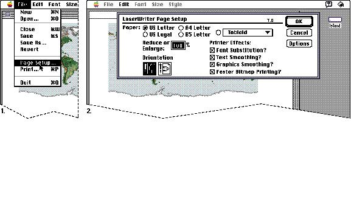 Print...The Print command lets the user specify various parameters, such as print quality and number of copies, and then prints the document. The parameters apply to only the current printing operation and are not saved with the document. Figure 4-71 shows a typical Print dialog box.If the user has not selected a printer in the Chooser,
display a dialog box when the user chooses the Print
command. This dialog box should alert the user If a document is printed from the Finder, the document
is opened and the Print dialog box is displayed. If the
application is launched for the purpose of printing the
document, the application quits after the printing is
complete or canceled. If the application is already
running, the application remains active after the printing
is complete. This behavior occurs so that the application
remains in the same state after printing a document as
before the printing Figure 4-71 A Print dialog box 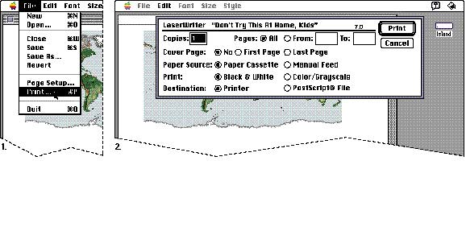 If you find it necessary to add items to the Print dialog box, do so at the bottom of the dialog box. For more information on printing, see the appropriate book in Inside Macintosh. QuitThe Quit command lets the user leave the application and return to the Finder, or another open application. If any open documents have been changed since the last time they were saved, present the standardsave changes alert box, once for each open document. This alert box is described in the section "Close" on page 79. |